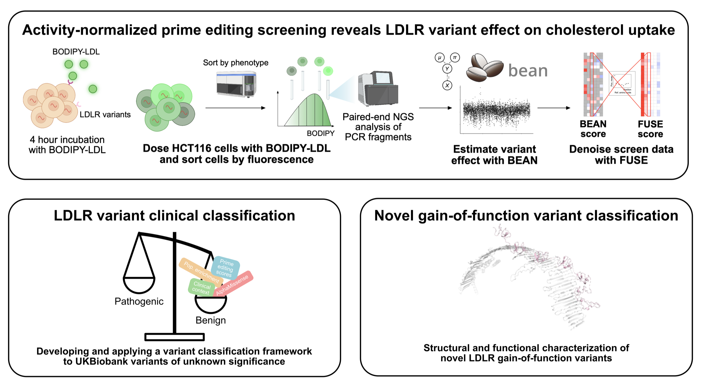
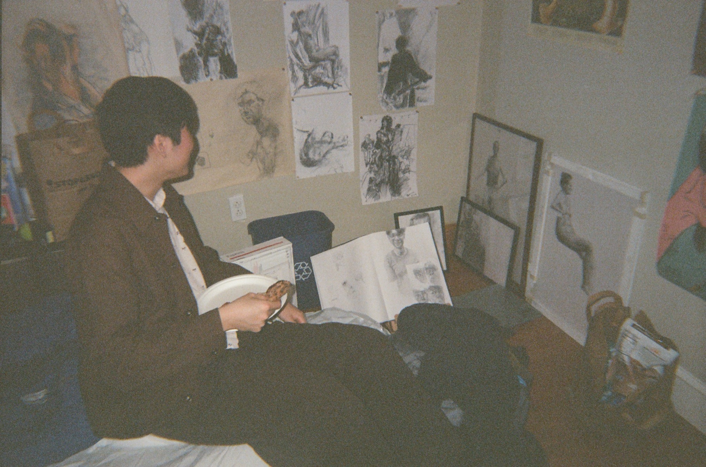

PhD Student · Genetics, Stanford University
Phillip Zhou
Building high-throughput experimental platforms to measure protein function and gene expression at scale.

About Me
I am a PhD student in Stanford's Genetics program interested in building high-throughput experimental platforms for measuring protein function and gene expression at scale.
Prior to Stanford, I was a research technician for two years at Dr. Richard Sherwood's lab at the Brigham and Women's Hospital / Harvard Medical School. I received my bachelor's degree from Amherst College, magna cum laude, majoring in Mathematics and Biology.
Outside of work, I love drawing/visual art, listening to music, playing the bass, and reading world literature!
Research Interests
High-throughput screening

During my time as a research technician with Dr. Richard Sherwood, I pursued several projects relating to genome editing and CRISPR screening. We have released a preprint, accepted for publication in Circulation, regarding a prime editing screen measuring the effect of individual coding variants in the low-density lipoprotein receptor gene (LDLR), which is essential for clearing "bad cholesterol" from the bloodstream. This screen is able to measure the change in cholesterol uptake induced by individual genetic variants in the human cell line HCT116, and provides evidence that can inform current variant pathogenicity classifications. We propose that such experimental platforms can add additional information complementary to predictive algorithms such as AlphaMissense. Our screen nominates gain-of-function variants and measures how RNA splicing affects LDL uptake, which is currently difficult to capture computationally.
I believe the predictive biology field will be advanced by large-scale data generation initiatives to train machine learning algorithms. As a PhD student, I am excited to apply the skills I have gained during this project in subsequent projects relating to biophysics, protein–ligand interactions, and protein engineering.
Publications
-
Zhou P.J., Simon M.V., Yu T., Gligorovski V., Mathis N., Zhao J., Vogt F., Phan Q.V., Ryu J., Pan Q., Tyagi A., Ascher D.B., Schwank G., Pinello L., Cassa C.A., Sherwood R.I. LDLR variant classification through activity-normalized prime editing screening. bioRxiv, December 2025.
Read preprint → -
Doerr, S., Zhou P.J., Ragkousi K. Origin and development of primary animal epithelia. BioEssays, Volume 46, Issue 2, February 2024.
Read paper →
Other Work
-
The Ins and Outs of Optimal Transport
My undergraduate mathematics thesis. I review the field of optimal transport, which is a field of math relevant to diverse areas such as machine learning, quantum mechanics, computational biology, and computer graphics, among others. This thesis is a suitable read for advanced undergraduates, particularly those that have some familiarity with measure theory.
Read thesis → Download slides → -
CRISPR Screening Module
Materials for the CRISPR screening module I organized and presented for Harvard's GENETIC 390QC Bootcamp: Experimental Approaches in Genetics together with Dr. Richard Sherwood.
View on GitHub →
CV
Download my current CV for a full overview of my education, research experience, and skills.
Download CV (PDF)Art

I love making and learning about art, and have been drawing on and off for pretty much my whole life. I was able to take art lessons as a kid and continued my passion by taking drawing classes in high school with Arnor Bieltvedt, culminating in a senior portfolio in AP 2-D Art and Design. I took Drawing in college with Gabriel Phipps and learned figure drawing from Jesse Thompson while studying abroad in Singapore. After graduating college, I continued learning about figure drawing in weekend classes taught by John Asimacopoulos at the Academy of Realist Arts. Here are a few pieces from over the years.
Figure Studies
Portraits
Bioart
Abstract
Contact Me
Please contact me regarding collaborations, professional opportunities, or just to start a conversation! :)
- Email pz1729@stanford.edu
- LinkedIn linkedin.com/in/phillip-zhou-1b3348114
- Twitter @phillipzhou24